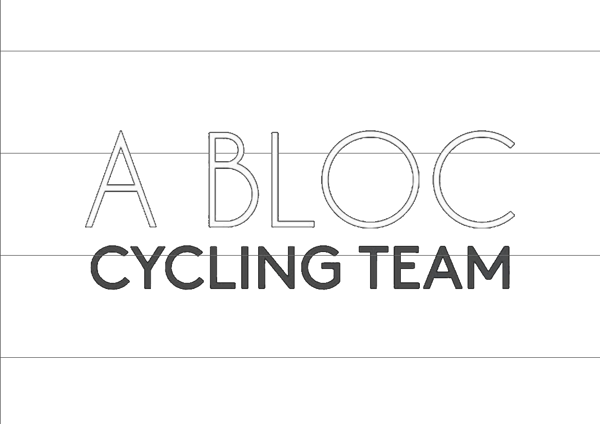

<nav class="navbar navbar-default navbar-fixed-top navbar-inverse navbar-fixed-width">
    <div class="container-fluid">
    <!-- Brand and toggle get grouped for better mobile display -->
    <div class="navbar-header">
      <button type="button" class="navbar-toggle collapsed" data-toggle="collapse" data-target="#bs-example-navbar-collapse-1" aria-expanded="false">
        <span class="sr-only">Toggle navigation</span>
        <span class="icon-bar"></span>
        <span class="icon-bar"></span>
        <span class="icon-bar"></span>
      </button>
 <a class="navbar-brand" href="#">a Bloc Cycling</a>
    </div>

    <!-- Collect the nav links, forms, and other content for toggling -->
    <div class="collapse navbar-collapse" id="bs-example-navbar-collapse-1">
      <ul class="nav navbar-nav">
            <li class="active"><a href="index.html">Home<span class="sr-only">(current)</span></a></li>
            <li><a href="documenten.html">documenten</a></li>
            <li><a href="strava.html">strava</a></li>
      </ul>
    </div><!-- /.navbar-collapse -->
  </div><!-- /.container-fluid -->
 </nav>

        <!--container purely for image only -->
<div class="container navbar-fixed-top navbar-fixed-width iconbigger">
<div class="pull-right">
        
    </div>
</div>